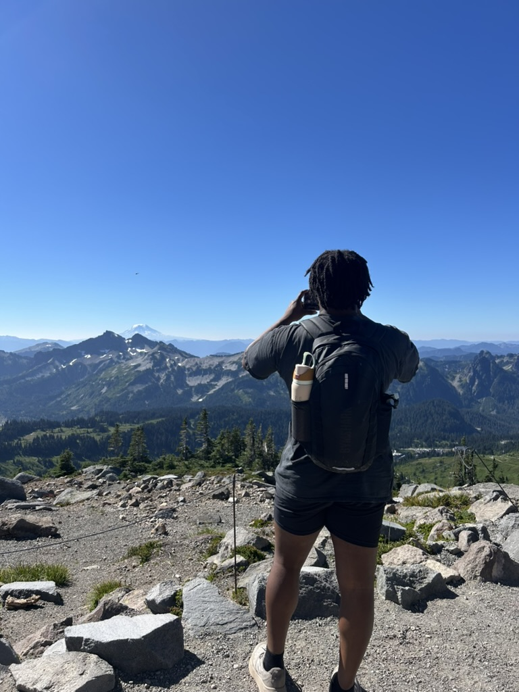
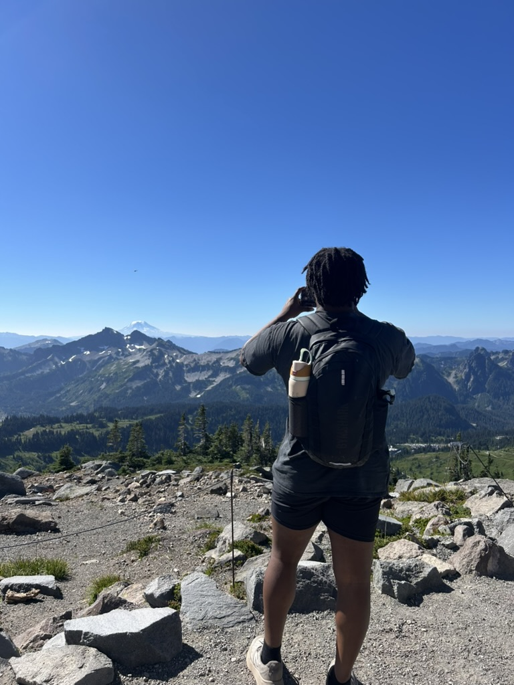
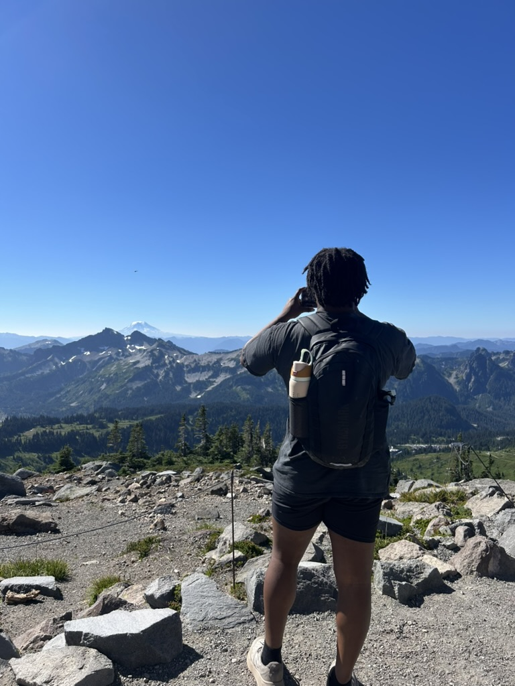
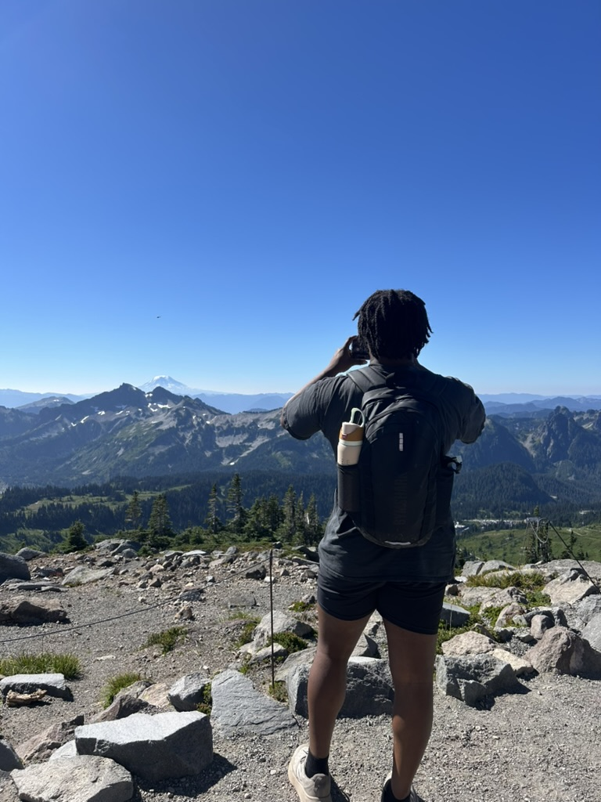

Hi, I'm Bolden Jones

 



Microsoft, Redmond, WA
May 2024 - August 2024
As an Explore Intern on the Microsoft Edge Consumer team, I collaborated with two other interns to build and deliver a new product feature. I authored a comprehensive product management specification, outlining the project timeline, engineering and success metrics, and cost analysis. My work focused on enhancing the performance sidebar in Microsoft Edge, where I implemented optimizations that reduced RAM and disk usage, resulting in a 90% increase in efficiency for users with 4–8 GB of memory on Edge Canary.
Microsoft, Redmond, WA
May 2025 - August 2025
As a Software Engineering Intern on the Microsoft Edge Fundamentals team, I implemented Perfetto background tracing into an internal testing pipeline, enabling engineers to automatically capture performance data during test runs. I also designed and integrated a user interface with preset configurations, making it easy for engineers to create and manage Perfetto tracing test runs. Additionally, I developed an MCP server to analyze Perfetto traces, which helped engineers quickly identify the root causes of metric regressions and improve overall product performance.
University of Illinois at Urbana-Champaign, Urbana, IL
April 2024 - April 2025
As Vice President of B[U]ILT, I help set the vision and direction for the organization, oversee all committees, and work closely with the executive board to ensure our initiatives support our mission. I lead major events, coordinate cross-committee collaboration, and represent B[U]ILT in university and industry partnerships. My role is to empower members, foster growth, and drive impactful change for our community.
University of Illinois at Urbana-Champaign, Urbana, IL
April 2025 - Present
B[U]ILT (Black, Indigenous, and Latino in Tech) is an organization that serves as a resource for underrepresented students by connecting them to professional and academic opportunities in tech-related fields. Within B[U]ILT, I lead a committee of members in managing and executing all technical initiatives. I oversee task assignments, set project deadlines, and ensure that each initiative stays on track to achieve its objectives.
I'm a fourth-year Computer Science student at the University of Illinois at Urbana-Champaign. I am pursuing software engineering opportunities where I can apply the skills I've developed in areas such as coding, algorithm design, and system architecture. I'm eager to contribute to teams that create impactful, real-world software solutions and help drive innovation.
In my free time, I enjoy going to the gym, playing video games, and playing volleyball. I am also a huge fan of the Pokemon series and have been playing the games since I was a kid.